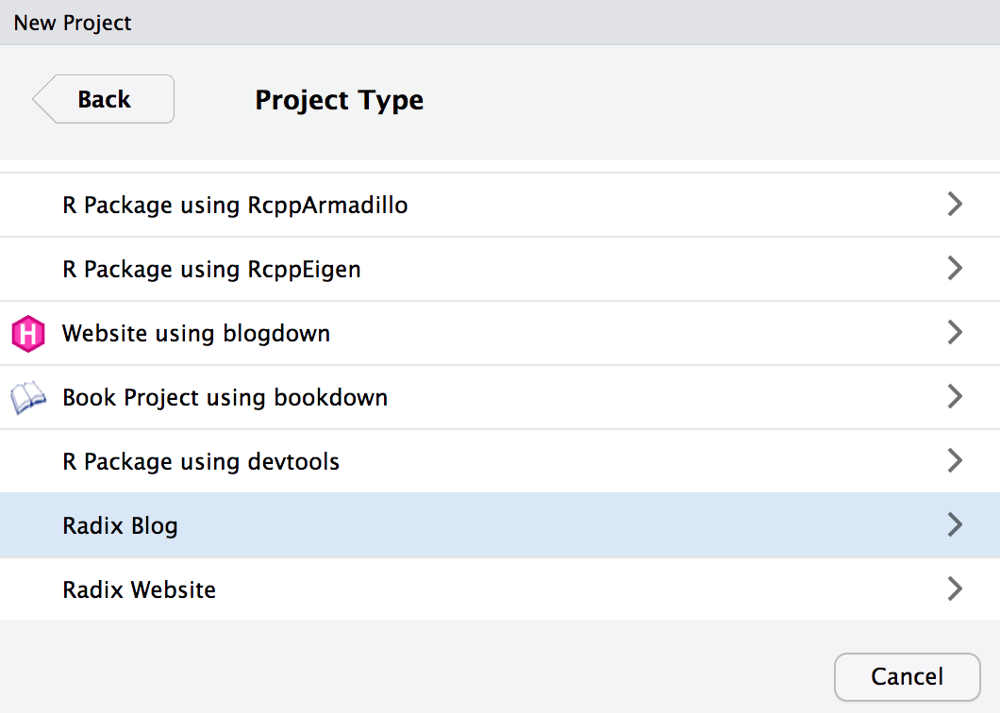
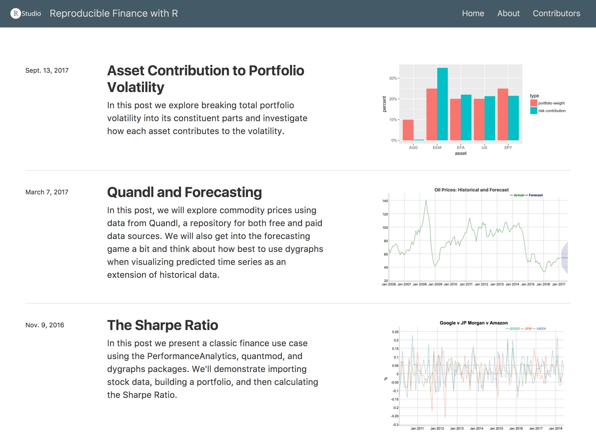
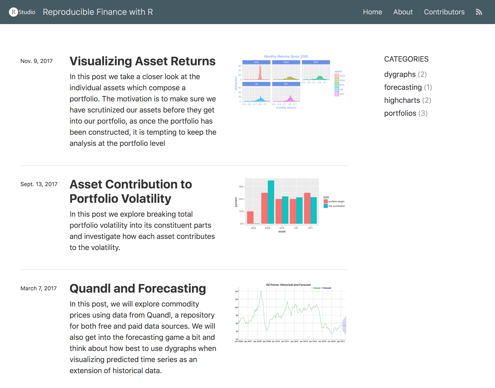
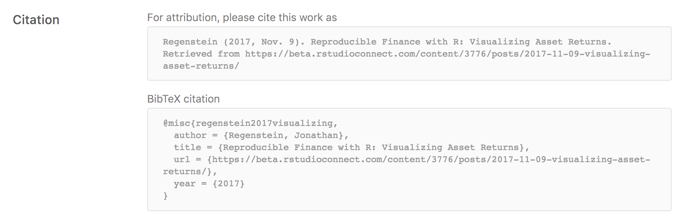
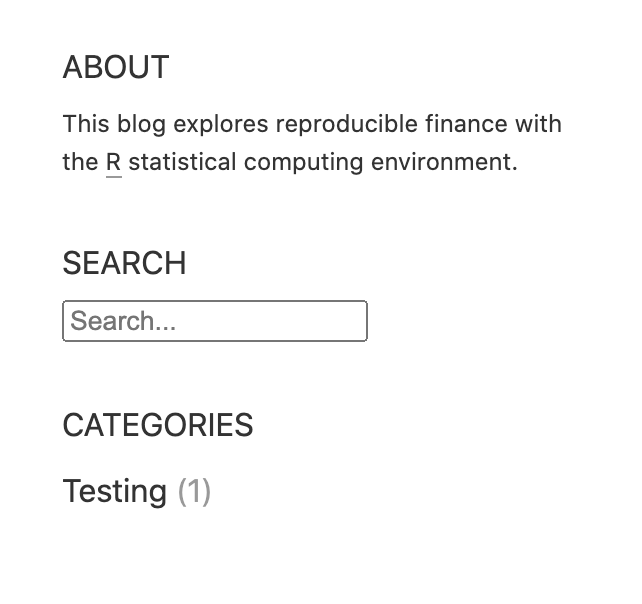
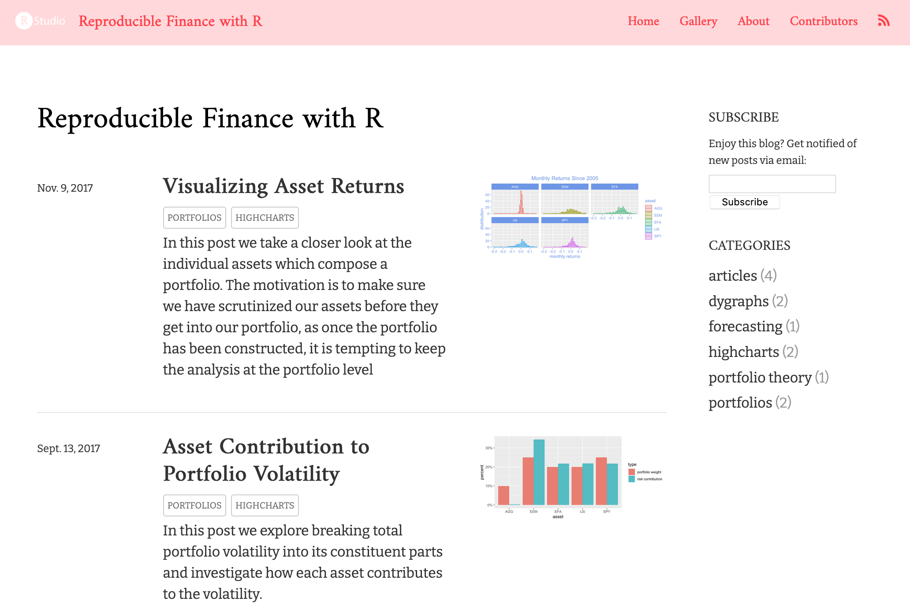
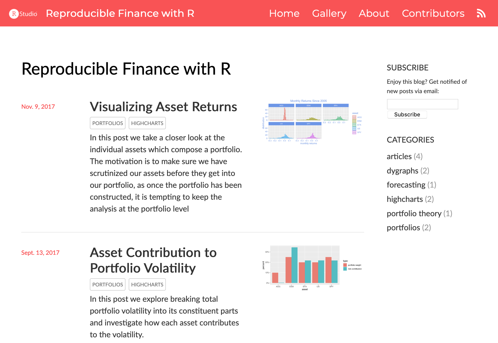
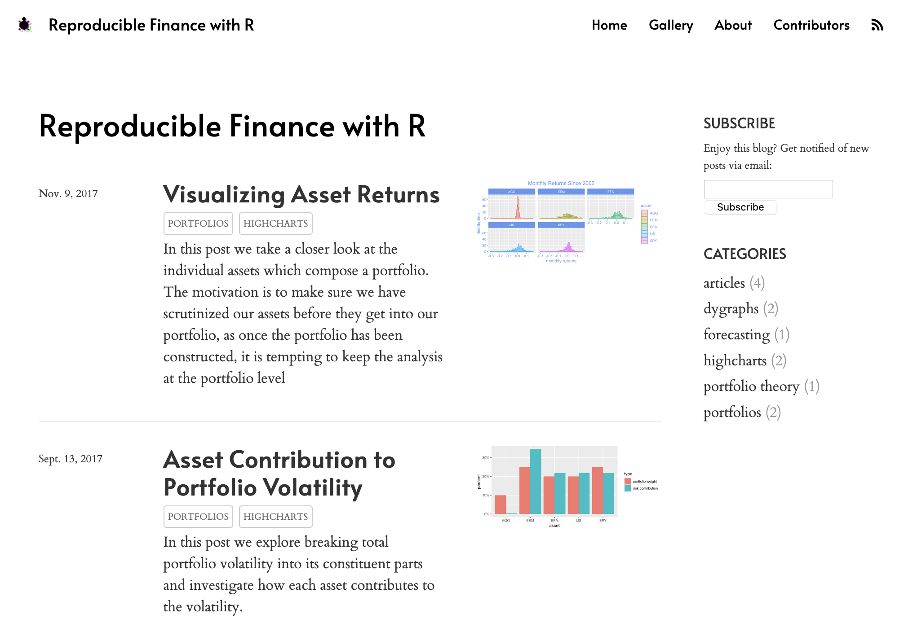
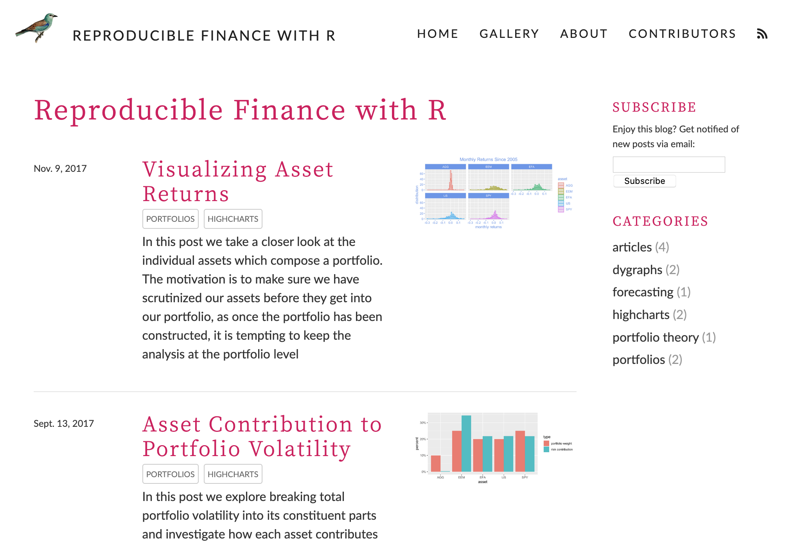
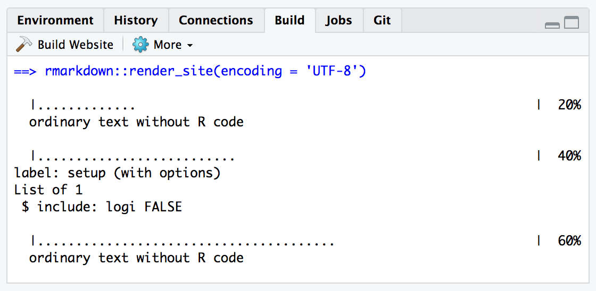

Create a blog to publish a collection of Distill articles
Distill for R Markdown websites include integrated support for blogging. To create a blog you author a collection of posts (located in the _posts sub-directory of your website) and then dedicate a page (usually the website homepage) to a listing of all of your posts.
Structure difference: Websites are just collections of pages you can navigate to via the top navigation bar, whereas blogs have collections of posts that can be indexed and syndicated (via their RSS feed). Distill blogs are a distill website with added blog posts.
Layout difference: Within a blog, Distill enables a special page on your website called a listing page. Whereas websites require you to manually set up links to pages, a listing page collects links to posts for you, displaying key metadata (like date published, author, categories, title, etc.) and a thumbnail image. When you knit and publish a new post, this page automatically updates by adding the most recent post to the top of the list.
Workflow difference: Furthermore, website pages and root pages of blogs are re-rendered when the site is rebuilt but blog articles are not. Each blog article has to be rendered on its own, with intent. Why? Given that R package upgrades have a tendency to break older code, continuously re-rendering old posts is nearly impossible to do without errors, especially over longer periods of time.
If you are using RStudio, the easiest way to get started is to use the Distill Blog option in the RStudio New Project dialog:

A new RStudio Project for the blog will be created and opened. The blog will include the following files:
| Option | Description |
|---|---|
_site.yml |
Website configuration file. |
index.Rmd |
Blog home page. |
about.Rmd |
Blog about page. |
_posts/welcome/welcome.Rmd |
Welcome post for the blog. |
Note that the welcome post is just there to provide some skeletal content for the blog – feel free to delete it and add your own initial post to the blog as described in creating a post.
If you are not using RStudio you can also call the Distill create_blog() function:
library(distill)
create_blog(dir = "my-blog", title = "My Blog")The basic scaffolding for a blog and an initial welcome post will be created within the my-blog sub-directory.
After you’ve created the blog scaffolding, there are a couple of additional configuration items you’ll want to add to your _site.yml so that it’s easier to share content on the blog via RSS and social networks like Twitter:
A short description of the site. This field is used for the channel description of your RSS feed.
A base_url for the site (the URL where it will be published to). This is used both for RSS feed items and for sharing posts via Open Graph and Twitter Card.
For example:
_site.yml
name: "reproducible-finance-with-r"
title: "Reproducible Finance with R"
description: |
Exploring reproducible finance with the R statistical
computing environment.
base_url: https://beta.rstudioconnect.com/content/11424/
navbar:
logo: images/rstudio.png
right:
- text: "Home"
href: index.html
- text: "About"
href: about.html
- text: "Contributors"
href: contributors.html
- icon: fa fa-rss
href: index.xml
output: distill::distill_articleNote that we’ve also added a feed icon to the right side of the menu bar which makes it easy to discover and browse the RSS feed for the blog.
The easiest way to start authoring a new post is to call the create_post() function from within your blog’s directory. For example:
library(distill)
create_post("The Sharpe Ratio")This will create a sub-directory for your post within the _posts directory, add a stub Distill article, and open the article for editing.
If you want your post to start out as a draft (i.e. not be included within the listing of all posts) then you can add draft = TRUE. For example:
create_post("The Sharpe Ratio", draft = TRUE)You work on blog posts independent of the enclosing website (use Knit to render and preview the post just like any R Markdown document). This is in fact the only way to update post content — posts are considered standalone documents that are not re-rendered when the site is built. This is because posts are often expensive to render and have R package dependencies that may be difficult to satisfy as time goes on.
Posts are stored within the _posts sub-directory of your site, and have a directory name that reflects the date that you created the post along with the post’s title slug. For example:
_posts/2016-11-08-sharpe-ratio
Note that the date prefix is not strictly required, but is done by default as a convenience so that posts appear in chronological order within the filesystem.
If you work on a post over the course of a few days and/or if you change your post’s title after you begin working on it, you may want to rename the post directory. You can use the rename_post_dir() function to update the date and/or title slug reflected in the directory name. For example:
# rename to reflect the title and date in the post YAML front-matter
rename_post_dir("_posts/2016-11-08-sharpe-ratio") You can also specify an explicit slug and/or date_prefix if you prefer not to use values derived from the post’s YAML.
Note that you should be sure to rebuild your site after renaming a post so that it’s updated URL is reflected in the index page and RSS feed.
Once you have authored one or more posts you’ll want to create a listing page. You can do this by adding a listing metadata entry to the page you to include the listing on. This is often the main page for the website (index.Rmd). For example:
index.Rmd
---
title: "Reproducible Finance with R"
site: distill::distill_website
listing: posts
---In our example blog (which will be described in more detail below) this results in the following listing:

Above we demonstrated creating a listing page for all posts. You can also create a custom listing for a subset of posts (e.g. a gallery of featured posts). To do this, just enumerate the posts you want to include as follows:
gallery.Rmd
---
title: "Gallery of featured posts"
listing:
posts:
- 2016-11-08-sharpe-ratio
- 2017-11-09-visualizing-asset-returns
- 2017-09-13-asset-volatility
---If your posts include categories metadata, then the page will also include categories within the article listing. For example, here is some post metadata that includes categories:
---
title: "The Sharpe Ratio"
# (additional metadata e.g. description and date, excluded for brevity)
categories:
- portfolios
- dygraphsAs a result of including categories, the listing page now looks like this:

Categories are listed in the right-hand sidebar and are also displayed as metadata for each post. The name of each post’s author is also displayed in the article listing. You can disable both category displays as well as authors display using collection properties defined in _site.yml. For example:
_site.yml
name: "reproducible-finance-with-r"
title: "Reproducible Finance with R"
description: |
Exploring reproducible finance with the R statistical
computing environment.
base_url: https://beta.rstudioconnect.com/content/11424/
collections:
posts:
categories: false
categories_metadata: false
authors_metadata: falseWhen you create a listing page an RSS feed is created automatically for the page (using the name of the listing page with a .xml file extension). You can link to the RSS feed within your site’s navigation bar as follows (some navbar entries excluded for brevity):
_site.yml
name: "reproducible-finance-with-r"
title: "Reproducible Finance with R"
description: |
Exploring reproducible finance with the R statistical
computing environment.
base_url: https://beta.rstudioconnect.com/content/11424/
navbar:
right:
- icon: fa fa-rss
href: index.xml
output: distill::distill_articleNote that the description and base_url fields are both required to generate an RSS feed.
By default the most recent 20 articles will be included in the RSS feed. You can change this by specifying feed_items_max within the collection configuration in _site.yml (navbar and output format fields omitted for brevity):
_site.yml
name: "reproducible-finance-with-r"
title: "Reproducible Finance with R"
description: |
Exploring reproducible finance with the R statistical
computing environment.
base_url: https://beta.rstudioconnect.com/content/11424/
collections:
posts:
feed_items_max: 50Specify feed_items_max: false to have no limit on the number of items included in the feed.
By default, RSS feeds include only a summary of each post (based on the description field). If you want to include the full contents of the post (e.g. for syndication to another blog) add an rss: full_content entry to your site config as follows:
_site.yml
rss:
full_content: trueIf you want to create dedicated feeds that map to particular categories (e.g. to syndicate only a subset of your posts), you can do this:
_site.yml
rss:
full_content: true
categories:
- portfolios
- forecastingThe category-based feeds will be created in a categories directory at the top level of the site.
If you want to work on a post for a period of time without having it be added to the listing page, add draft: true to the post’s metadata. For example:
---
title: "The Sharpe Ratio"
description: |
In this post we present a classic finance use case using the
PerformanceAnalytics, quantmod, and dygraphs packages.
We'll demonstrate importing stock data, building a portfolio,
and then calculating the Sharpe Ratio.
draft: true
---When you are ready to publish the post, either remove the draft option or set it to false, then build the website.
Beyond support for drafts, Distill has a number of additional features to accommodate a variety of post authoring and contribution workflows, including importing posts published elsewhere on the web (e.g. on RPubs, in a Git repository, or on another blog). The article on blog post workflow describes these options in more detail.
Readers will likely want to comment on and share articles they read on your blog. You can enable support for Disqus comments and sharing links for Twitter, LinkedIn, and other services by adding options to the collection:posts section of _site.yml.
For example, the following options provide the Disqus shortname for a site and specify that we want sharing buttons for Twitter and LinkedIn.
_site.yml
name: "reproducible-finance-with-r"
title: "Reproducible Finance with R"
description: |
Exploring reproducible finance with the R statistical
computing environment.
base_url: https://beta.rstudioconnect.com/content/11424/
collections:
posts:
disqus: reproducible-finance-with-r
share: [twitter, linkedin]The following footer is then automatically included at the end of each post:
Note that the base_url field is required in order to use Disqus and sharing links.
Valid values for the share option are twitter, linkedin, facebook, google-plus, and pinterest.
By default, the full text of Disqus comments are not displayed (rather, a link is provided that will expand the comment section). This is done so that a long comment section doesn’t obscure the bibliography and other appendices. If you’d rather show the comments by default you can use this alterante syntax for disqus configuration:
collections:
posts:
disqus:
shortname: reproducible-finance-with-r
hidden: false
share: [twitter, linkedin]Specifying the hidden: false option for disqus will causes all comments to be displayed inline by default.
Blog sites automatically include a search box within the navigation bar. You can disable the search box using the the search field of the navbar key within _site.yml. For example:
---
name: "distill"
title: "Distill for R Markdown"
navbar:
logo:
image: images/logo.png
href: https://www.posit.co
search: false
---Note that top level articles within blog sites will also be included in search results so long as they have a description metadata field.
If you want to display a link to the source code for your blog on the navigation bar, add a source_url field to the navbar definition. For example:
---
name: "distill"
title: "Distill for R Markdown"
navbar:
logo:
image: images/logo.png
href: https://www.posit.co
source_url: https://github.com/rstudio/distill
---Note that if you’ve already defined a repository_url field in _site.yml you can just use source_url: true and your repository_url will be used for the link.
You can use whatever scheme you like to organize the _posts directory. You can have all posts at the top level or you can create subdirectories to create groupings of posts.
One popular scheme for organizing blog posts is to use a date prefix for the post directory names. For example:
_posts/
2017-11-09-visualizing-asset-returns/
2017-09-13-asset-volatility/
2017-03-07-quandl-and-forecasting/
2016-11-08-sharpe-ratio/The benefits of this scheme are that post names are given additional uniqueness (to guard against colliding names over the long term) and are also automatically listed in order when browsing the _posts directory.
Note that if you use a date-prefixed post directory you are not required to specify an explicit date field within your post’s metadata.
Note that the listing for our example above includes a preview image for each post. Preview thumbnail images are generated automatically based on the first plot encountered within your post. You can specify that a specific plot should be used as the preview image using the preview chunk option. For example:
```{r, layout="l-body-outset", preview=TRUE}
library(ggplot2)
ggplot(diamonds, aes(carat, price)) + geom_smooth() +
facet_grid(~ cut)
```If you want to use another image entirely as a post preview you add a preview field to the post’s metadata. For example, here we add a preview field to the example metadata from above (some fields excluded for brevity):
---
title: "The Sharpe Ratio"
description: |
In this post we present a classic finance use case using the
PerformanceAnalytics, quantmod, and dygraphs packages.
We'll demonstrate importing stock data, building a portfolio,
and then calculating the Sharpe Ratio.
preview: images/sharpe-ratio.png
---Preview images are also used for generating Open Graph and Twitter Card metadata. However, since those systems require that preview images be specified as absolute URLs, you also need to add a base_url field to your _site.yml file as described above in Getting Started.
If your _site.yml file provides a base_url field, then an article citation appendix and related metadata will be included automatically within all published posts. For example:

If you want to disable this behavior you can use the collections:posts:citations field within _site.yml. For example:
_site.yml
name: "reproducible-finance-with-r"
title: "Reproducible Finance with R"
description: |
Exploring reproducible finance with the R statistical
computing environment.
base_url: https://beta.rstudioconnect.com/content/11424/
collections:
posts:
disqus: reproducible-finance-with-r
share: [twitter, linkedin]
citations: falseYou can also disable citations for an individual post by adding citation: false to the post’s YAML metadata.
You can add HTML that enables readers to subscribe to your blog by including the collections:posts:subscribe option within _site.yml. The subscribe option in turn points to an HTML file that provides the ability to subscribe to your blog. For example:
_site.yml
name: "reproducible-finance-with-r"
title: "Reproducible Finance with R"
description: |
Exploring reproducible finance with the R statistical
computing environment.
base_url: https://beta.rstudioconnect.com/content/11424/
collections:
posts:
disqus: reproducible-finance-with-r
share: [twitter, linkedin]
subscribe: _subscribe.html_subscribe.html
<form method='post' action='https://blogtrottr.com'>
<p>Enjoy this blog? Get notified of new posts via email:</p>
<input type='text' name='btr_email' />
<input type='hidden' name='btr_url'
value='https://beta.rstudioconnect.com/content/11424/index.xml'/>
<input type='hidden' name='schedule_type' value='0' />
<input type='submit' value='Subscribe' />
</form>This example uses the Blogtrottr service to provide an email subscription. You could also use another service or simply include a link to your RSS feed.
The contents of _subscribe.html will be included in both the sidebar of the main listing page as well as in the footer of articles. Note that relative URLs won’t work in subscription HTML since the content appears at different levels of the site (thus we include the full URL to the RSS feed in the example above).
You can also add arbitrary HTML to the top of the sidebar by including the collections:posts:custom option within _site.yml. The custom option in turn points to an HTML file that will be displayed above the “Subscribe” and “Categories” sections. Unlike the Subscribe HTML, Cutstom HTML is not displayed in article footers. This custom feature can be used to display anything in the sidebar that Distill does not automatically generate. While only one custom file may be defined per collection, the HTML contained within is extremely adaptable to different use cases (even several simultaneously). For example, the below snippets will display an About section on top, and below that a search bar:
_site.yml
name: "reproducible-finance-with-r"
title: "Reproducible Finance with R"
description: |
Exploring reproducible finance with the R statistical
computing environment.
base_url: https://beta.rstudioconnect.com/content/3776/
collections:
posts:
disqus: reproducible-finance-with-r
share: [twitter, linkedin]
custom: _custom.html_custom.html
<div class="sidebar-section custom">
<h3>About</h3>
This blog explores reproducible finance with the
<a href="https://www.r-project.org/">R</a>
statistical computing environment.
</div>
<div class="sidebar-section custom">
<h3>Search</h3>
<form action="https://duckduckgo.com/">
<input type="text" name="q" placeholder="Search...">
<input type="hidden" name="sites"
value="https://beta.rstudioconnect.com/content/3776/"> <!-- Replace with your blog URL -->
<!--<button type="submit">Search</button>-->
</form>
</div>
While the custom HTML option inherits general CSS styling from the rest of the Distill blog, by default it does not inherit the sidebar-specific CSS. In order to fully match the rest of the sidebar sections, each section must be nested within a <div class="sidebar-section custom"> tag, as seen in the above example. This configuration is intended to provide a good balance between flexibility and ease-of-use.
The example search bar functionality uses the popular DuckDuckGo search engine. After entering search terms and hitting the enter key the user is taken to the search engine’s website and shown relevant search results from the blog. Note that the blog will need to have been recently crawled by the search engine in order for search results to be thorough and up to date. Replacing the HTML snippet’s hard-coded blog URL should be the only modification necessary to begin using this example. Other search engines may be used with further modification. The “Search” button has been left out in this example, but may be uncommented if desired.
When a blog post is published, resource files located alongside the post in its directory are also published. The following files are not published by default:
Files beginning with "." (hidden files).
Files beginning with "_"
Files known to contain R source code (e.g. ".R", ".s", ".Rmd"), R data (e.g. ".RData", ".rds"), or configuration data (e.g. "rsconnect" ,"packrat", "renv")).
You can override this behavior using a resources metadata entry for your post, which can specify explicit files to include or exclude. For example (some fields excluded for brevity):
---
title: "The Sharpe Ratio"
description: |
In this post we present a classic finance use case using the
PerformanceAnalytics, quantmod, and dygraphs packages.
We'll demonstrate importing stock data, building a portfolio,
and then calculating the Sharpe Ratio.
resources:
exclude:
*.csv
---As described above, adding a blog to a Distill website requires creating a “posts” collection (i.e. a _posts directory containing sub-directories, each of which includes an article) and adding a listing page for your posts (most often the site’s home page).
In addition to “posts”, you can add other collections of articles to your site with their own index pages. The main benefits of including articles within a collection are:
To create a new article collection, do the following:
Create a top level directory for the collection (e.g “_analyses”)
Add an entry for it to your _site.yml file. For example:
collections:
posts:
categories: true
analyses:
categories: trueOptionally, create an index page for your collection by adding the appropriate listing YAML front matter. For example, you could create a file named analyses.Rmd within the top-level directory of your website with the following YAML:
---
title: "Analyses"
listing: analyses
---You may also want to add a link to your listing page in the site navigation menu.
You can use the create_post() function to create articles within any collection. For example:
create_post("water-quality-trends", collection = "analyses")Distill blogs can use themes and CSS just like Distill sites. You can use the create_theme() function to add a theme CSS file in the current working directory.
For example:
create_theme(name = "theme") Read more about customizing a Distill theme. To apply a custom theme site-wide, add a theme key to the top-level of your _site.yml configuration file:
name: "distill"
title: "Distill for R Markdown"
theme: theme.css
navbar:
# (navbar definition here)Blog posts (along with listing and custom listing pages) will follow the theme. Below are some examples of different themes applied to our demo blog.
Demo theme detailed here.

Inspired by: https://www.pipinghotdata.com/

Inspired by: https://milesmcbain.xyz/

Inspired by: https://tidymodels.org (courtesy Desirée De Leon)

After you’ve authored one or more posts you will want to build the entire site before publishing it.
If your Distill website is contained within an RStudio project you can use the Build Website command available in the Build pane to generate the site:

To build a website from the command line, use the rmarkdown::render_site() function:
There are a variety of options available for making your site available to others, see the article on website publishing for details.
The distill reference site includes several example sites and blogs.
An example which reproduces several posts from the Reproducible Finance with R series on the R Views blog can be found here: https://beta.rstudioconnect.com/content/11424/
The source code for the example can be found here: https://github.com/jjallaire/reproducible-finance-with-r
If you see mistakes or want to suggest changes, please create an issue on the source repository.
Text and figures are licensed under Creative Commons Attribution CC BY 4.0. Source code is available at https://github.com/rstudio/distill, unless otherwise noted. The figures that have been reused from other sources don't fall under this license and can be recognized by a note in their caption: "Figure from ...".